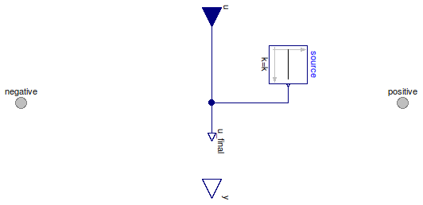

Table of Contents
- User's Guide
- Blocks
- Conditions
- Assemblies
- Regions
- Subregions
- Connectors
- Characteristics
- Units
- Quantities
- BaseClasses
Download
- Latest: FCSys-2.0.zip (**Please check back soon or contact kdavies4 at gmail.com.)

| Name | Description |
|---|---|
| Specify areic current (measure normal force), with conservation of material | |
| Specify normal force (measure areic current), with conservation of material | |
| Custom expressions | |
| Base classes (not generally for direct use) |
 FCSys.Conditions.FacePair.Normal.CurrentAreic
FCSys.Conditions.FacePair.Normal.CurrentAreic
Assumptions:
Extends from BaseClasses.PartialCondition (Partial model for a normal condition).
| Type | Name | Default | Description |
|---|---|---|---|
| ConditionType | conditionType | BaseClasses.ConditionType.Cu... | Type of condition |
| Specification | |||
| Boolean | internal | true | Use internal specification |
| Constant | source | redeclare Modelica.Blocks.So... | Source of internal specification |
| Type | Name | Description |
|---|---|---|
| Face | negative | Negative-side connector to transport linear momentum and heat of a single species |
| Face | positive | Positive-side connector to transport linear momentum and heat of a single species |
model CurrentAreic "Specify areic current (measure normal force), with conservation of material" extends BaseClasses.PartialCondition( final conditionType=BaseClasses.ConditionType.CurrentAreic, u(final unit="N/(l2.T)"), final y(final unit="l.m/T2") = negative.mPhidot_0 + positive.mPhidot_0); equation negative.J = u_final;end CurrentAreic;
FCSys.Conditions.FacePair.Normal.Force
Assumptions:
Extends from BaseClasses.PartialCondition (Partial model for a normal condition).
| Type | Name | Default | Description |
|---|---|---|---|
| ConditionType | conditionType | BaseClasses.ConditionType.Fo... | Type of condition |
| Specification | |||
| Boolean | internal | true | Use internal specification |
| Constant | source | redeclare Modelica.Blocks.So... | Source of internal specification |
| Type | Name | Description |
|---|---|---|
| Face | negative | Negative-side connector to transport linear momentum and heat of a single species |
| Face | positive | Positive-side connector to transport linear momentum and heat of a single species |
model Force "Specify normal force (measure areic current), with conservation of material" extends BaseClasses.PartialCondition( final conditionType=BaseClasses.ConditionType.Force, u(final unit="l.m/T2"), final y(final unit="N/(l2.T)") = negative.J); equation negative.mPhidot_0 + positive.mPhidot_0 = u_final;end Force;
FCSys.Conditions.FacePair.Normal.Custom
The expression to which the condition is applied (x)
must involve face.J and/or face.mPhidot_0.
Extends from BaseClasses.PartialCondition (Partial model for a normal condition).
| Type | Name | Default | Description |
|---|---|---|---|
| ConditionType | conditionType | BaseClasses.ConditionType.Cu... | Type of condition |
| Specification | |||
| Boolean | internal | true | Use internal specification |
| Constant | source | redeclare Modelica.Blocks.So... | Source of internal specification |
| Real | x | negative.J | Expression to which the condition is applied |
| Measurement | |||
| RealOutput | y | negative.mPhidot_0 + positiv... | Measurement expression |
| Type | Name | Description |
|---|---|---|
| input RealInput | u | Value of specified condition |
| Face | negative | Negative-side connector to transport linear momentum and heat of a single species |
| Face | positive | Positive-side connector to transport linear momentum and heat of a single species |
| Measurement | ||
| output RealOutput | y | Measurement expression |
model Custom "Custom expressions" extends BaseClasses.PartialCondition(final conditionType=BaseClasses.ConditionType.Custom, y=negative.mPhidot_0 + positive.mPhidot_0); Real x=negative.J "Expression to which the condition is applied"; equation x = u_final;end Custom;